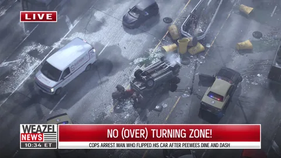
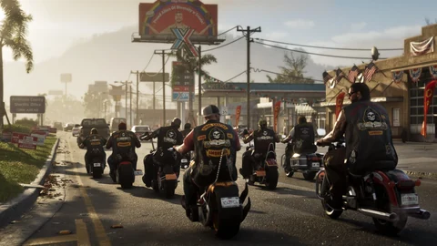
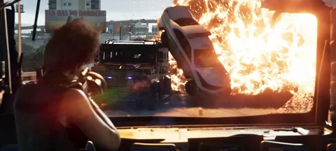

Bandas y facciones · GTA VI
Las bandas y facciones de GTA VI
Moteros de Ambrosia, banda de Southside, atracadores de Raul, traficantes de los Keys y fuerzas del orden: los grupos que Rockstar ha mostrado, y lo que queda por confirmar.
Cada ficha dice de dónde sale el nombre del grupo: un texto de Rockstar, un parche o un rótulo visibles en la imagen, o una lectura de los jugadores. Mostrar un grupo no dice si será un aliado o un objetivo: su papel está por descubrir. Entender los estados.


Las 6 fichas

Final Chapter MC
La refinería da el trabajo, el club pone el resto.
El club de moteros de Ambrosia, fundado en 1982 según sus parches negros y dorados: la banda de moteros local de la que habla la presentación oficial de la región.
Ver la ficha
La banda PTT Youngin$
Una guarida que saquear, y luego la huida.
La banda de Southside cuya guarida propone saquear la edición Ultimate. Rockstar la describe como una de las más ruidosas y visibles de Vice City.
Ver la ficha
San4San
Un nombre leído por los jugadores, nunca presentado por Rockstar.
Una banda de Vice City identificada por los jugadores: su nombre se leería en una cadena y en un mural de los tráileres. Rockstar nunca la ha presentado en un texto.
Ver la ficha
El equipo de Raul Bautista
Seguirle, o retirarse.
Los atracadores que recluta Raul Bautista, siempre en busca de talentos dispuestos a asumir los mayores riesgos. En el Extended Look, Jason y Lucia entran en él tras una huida exitosa.
Ver la ficha
La red de Brian Heder
El contrabando a la antigua, desde los Keys.
Los traficantes de los Keys para los que trabaja Jason, en torno a Brian Heder, contrabandista de la edad de oro que pasa su mercancía por su astillero.
Ver la ficha
Las fuerzas del orden de Leonida
Sin testigos ni alarma, nadie te busca.
Policía de Vice City, sheriffs de condado, policía marítima y guardacostas: lo que los tráileres y las capturas muestran de quienes persiguen a Jason y Lucia.
Ver la fichaFuentes oficiales
Lo que Rockstar ha mostrado
Ningún texto de Rockstar enumera las bandas. Aun así, unos parches, un rótulo, un texto de edición y una entrevista dibujan el panorama.
- Visto en un medio
Tráiler 1
Un coche del Vice-Dale Police Department y la oficina del sheriff del condado de Leonard: los primeros nombres legibles de fuerzas del orden.

Imagen oficial de Rockstar Games - Oficial
Regiones y personajes
Para Rockstar, en Ambrosia, la refinería da los empleos y la banda de moteros local se encarga del resto; en la captura, los chalecos llevan “Final Chapter”. Raul recluta atracadores, Jason trabaja para los traficantes de los Keys.

Imagen oficial de Rockstar Games - Visto en un medio
Tráiler 2
Un furgón blindado de la policía queda frente a Lucia hacia el 1:59; hacia el 1:25, el astillero de Brian carga de noche.

Imagen oficial de Rockstar Games - Oficial
Edición Ultimate
Primera banda nombrada en un texto oficial: los PTT Youngin$ de Southside, cuya guarida se saquea antes de huir. Otra captura muestra una lancha rotulada Vice City Police.

Imagen oficial de Rockstar Games - Visto en un medio
Extended Look
Una entrega para Boobie en Venture Apartments acaba en redada policial; Raul mete a Jason y Lucia en su equipo; Brian les confía un trabajo sentados a la mesa.

Imagen oficial de Rockstar Games - Oficial
Famitsu
Rob Nelson (Rockstar North): te infiltras en las guaridas de bandas para robar dinero o droga, que el mapa cuantifica de antemano; la droga se revende a un perista. Sin testigos ni alarma, no hay nivel de búsqueda.

Imagen oficial de Rockstar Games
Aquí, un nombre “leído en la imagen” sale de un parche, una inscripción o un rótulo: no por eso lo ha presentado Rockstar.
Observaciones de los jugadores
Lo que ha identificado la comunidad
Las wikis van más allá de las imágenes. Esto es lo que plantean.
Un nombre leído por una wiki sigue siendo una identificación de la comunidad mientras Rockstar no lo escriba.
Preguntas abiertas
Lo que queda por confirmar
Las bandas se muestran, no se explican.
¿Cuántas bandas?
Ninguna lista: Rob Nelson habla de guaridas de bandas, sin nombrarlas.
¿Unirse a una banda, conquistar un territorio?
Nada anunciado. Solo se describe el saqueo de las guaridas.
El botín de una guarida
Dinero y droga, cuantificados por el mapa; ninguna cantidad publicada.
La guarida de los PTT Youngin$ sin la edición Ultimate
Incluida en la edición; nada dice que exista sin ella.
Las otras policías
Se leen Vice City, Vice-Dale y dos oficinas del sheriff; el resto no se ha publicado.
Herramientas del sitio
Lo que cambia para ti
Para preparar desde ya con estas seis fichas.
Preguntas
Preguntas frecuentes
Las preguntas que se escriben en un buscador, con respuestas cortas y fechadas.
¿Qué bandas están confirmadas en GTA VI?
¿Se pueden atacar las guaridas de bandas?
¿Quiénes son los moteros de Ambrosia?
¿Cómo funciona el nivel de búsqueda?
¿Se puede entrar en el equipo de Raul?
16 fuentes consultadas
Fuentes y estados
Cada afirmación de esta página lleva un estado y viene de una página consultada en la fecha indicada. El texto de la edición Ultimate y las declaraciones de Rob Nelson se volvieron a leer el 3 de octubre de 2026 en las fuentes que los reproducen.
Oficial
Página o vídeo publicado por Rockstar (web de GTA VI, Newswire, tráileres, Extended Look), o declaraciones de un responsable de Rockstar recogidas por un medio identificado, con la fecha.
Visto en un medio
Lo que muestra una imagen o una secuencia oficial sin que Rockstar lo diga en un texto: un plano de tráiler, una captura, un momento del Extended Look, con el minuto exacto cuando se conoce.
Identificación de la comunidad
Relación establecida por jugadores, una wiki o un sitio de fans (lugar real, actor, condado). Se cita como tal, nunca se presenta como confirmada.
Por confirmar
Pregunta sin respuesta publicada: precio, compra, acceso, papel en la historia. La anotamos para no tener que adivinarla.
Páginas consultadas
- OficialWeb oficial de Grand Theft Auto VI (páginas “Only in Leonida”, ediciones, reservas)
Seis regiones y ocho personajes presentados el 6 de mayo de 2025; textos de las ediciones del 24 de junio de 2026. Releído el 27/09/2026 en las páginas que lo citan (rockstargames.com no se podía abrir desde nuestro taller ese día).
- OficialRockstar Games: capturas oficiales de GTA VI
Capturas de las regiones y los personajes (mayo de 2025) y de las ediciones (junio de 2026); los locales nombrados en los títulos de las capturas.
- OficialRockstar Games: vídeos oficiales de GTA VI (Tráiler 1, Tráiler 2, An Extended Look)
Tráiler 1 del 4 de diciembre de 2023, Tráiler 2 del 6 de mayo de 2025, Extended Look del 27 de agosto de 2026: de ahí vienen los fotogramas del sitio.
- OficialRockstar Newswire: Grand Theft Auto VI, An Extended Look
Presentación de 26 minutos capturada en PS5.
- OficialMicrosoft Store: Grand Theft Auto VI, Ultimate Edition (ficha oficial de la edición)
“PTT YOUNGIN$ COMPOUND”: saquear esta guarida de banda y escapar sin problemas con objetos especiales y un contrabando único.
- OficialGTABase: PTT Youngin$
Recoge el texto de Rockstar: saquear la guarida de una de las bandas más ruidosas de Southside, en Vice City, y luego escapar.
- OficialFamitsu: entrevista a Rob Nelson (Rockstar North) tras la demostración
Escondites que cambian con los capítulos, tres plazas de vehículo al principio, garajes para comprar, taquilla en Ammu-Nation, Pay ’n’ Spray y peristas, golpes, salones y tiendas, corte de pelo en casa.
- OficialGTAVice.net: traducción al inglés de la entrevista de Famitsu
La misma entrevista, citada en inglés; de ahí vienen las palabras de Rob Nelson recogidas aquí.
- OficialSVG: GTA 6’s wanted system explained, everything Rockstar has confirmed
Rob Nelson (IGN): un delito tiene que tener un testigo o hacer saltar una alarma; las gafas y el peinado no bastan, la policía conoce tu ropa.
- Visto en un medioWikipedia: Grand Theft Auto VI, An Extended Look
Resumen de las escenas: entrega para Boobie interrumpida por la policía, Raul que mete al dúo en su equipo, Brian que les confía un trabajo en la cena.
- Visto en un medioGTA Wiki: Grand Theft Auto VI, An Extended Look
Emisión del 27 de agosto de 2026 (Netflix y luego YouTube), 26 min 48 s, cuatro misiones: Venture Apartments, Effluvia, persecución con Raul, Megamundo.
- Identificación de la comunidadGTA Wiki: Final Chapter MC
Nombre sacado de una captura oficial de Ambrosia; fundado en 1982 según los parches; relacionado con los Bandidos y los Warlocks.
- Identificación de la comunidadGTA Wiki: San4San
Cadena en la concentración de coches del Tráiler 1 (1:08), mural de La Perle en el Tráiler 2 (0:46); nombre conocido primero por las filtraciones de 2022; banda vinculada a Venture Apartments.
- Identificación de la comunidadGTABase: GTA 6 gangs & factions
Final Chapter MC, PTT Youngin$ y San4San presentados como confirmados; doce cuerpos de policía registrados; bandas de GTA Vice City clasificadas como especulaciones.
- Identificación de la comunidadGTA 6 Explained: gangs and factions, confirmed groups vs rumors
El equipo de Raul y la red de Brian están confirmados pero sin nombre; darles un nombre inventado por los fans sería inexacto.
- Identificación de la comunidadGTA Wiki: Vice-Dale, Leonard, Mariana, Kelly y Ambrosia County (una página por condado)
Carteles y coches del sheriff de los tráileres en los que se leen los nombres de los condados; condados reales propuestos como equivalentes.
Lo que no hacemos. Ningún dato sacado de las filtraciones de 2022 o de 2026, ningún precio inventado, ninguna comparación presentada como confirmada. Los estados se explican en el Tutorial.
Sigue explorando


La calculadora
Saquear una guarida de banda, ¿da más dinero que una misión?
No se ha publicado ningún botín. Escribe lo que daría un golpe, su duración y tu parte: la calculadora compara tus actividades por hora de juego.
¿Y después?
Lo que sigue se escribe el 19 de noviembre de 2026.
Cada ficha se completará con el juego: lo que hay, lo que se hace allí, lo que da. Hasta entonces, nada inventado.